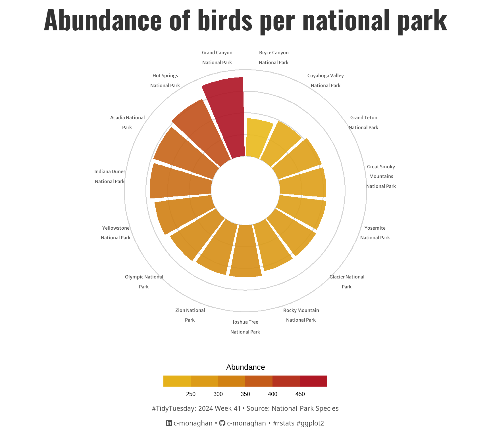

![]()
{kind=link}
# Loading packages -------------------------------------------------------------
pacman::p_load(
tidyverse, # Easily Install and Load the 'Tidyverse'
ggtext, # Improved Text Rendering Support for 'ggplot2'
showtext, # Using Fonts More Easily in R Graphs
ggeasy, # Makes theming plots easier
glue, # Interpreted String Literals
ggfx # Pixel Filters for "ggplot2" and "grid"
)
# Visualization Parameters -----------------------------------------------------
# Plot aesthetics
title_col <- "gray20"
subtitle_col <- "gray20"
caption_col <- "gray30"
text_col <- "gray20"
# Icons
tt <- str_glue("#TidyTuesday: { 2024 } Week { 41 } • Source: National Park Species<br>")
li <- str_glue("<span style='font-family:fa6-brands'></span>")
gh <- str_glue("<span style='font-family:fa6-brands'></span>")
# Text
title_text <- str_glue("Abundance of birds per national park")
caption_text <- str_glue("{tt} {li} c-monaghan • {gh} c-monaghan • #rstats #ggplot2")
# Fonts
font_add("fa6-brands", here::here("fonts/6.4.2/Font Awesome 6 Brands-Regular-400.otf"))
font_add_google("Oswald", regular.wt = 400, family = "title")
font_add_google("Noto Sans", regular.wt = 400, family = "caption")
font_add_google("Merriweather Sans", regular.wt = 400, family = "text")
showtext_auto(enable = TRUE)
# Theme
theme_set(theme_minimal(base_size = 14))
theme_update(
plot.title.position = "plot",
plot.caption.position = "plot",
panel.background = element_rect(fill = "white", color = "white"),
panel.grid = element_blank(),
panel.grid.major.x = element_blank(),
axis.text.x = element_text(size = 12, family = "text"),
axis.text.y = element_blank(),
legend.position = "bottom"
)
# Variables --------------------------------------------------------------------
# Paths
path <- "posts/2024/10/07"
folder <- "TT-W41/"
# Reading in data --------------------------------------------------------------
data <- tidytuesdayR::tt_load(2024, week = 41)
species <- data$most_visited_nps_species_dataThis document analyzes a dataset of species from the 15 most visited National Parks in the USA provided by #TidyTuesday. The main focus of this analysis will be on birds.
Setting up
Species data
The dataset includes various information on animal and plant species from 15 of the most visited parks in the USA. In particular, we are interested in the abundance of birds in each park.
Calculating abundance
# A tibble: 6 × 3
# Groups: Park_name [6]
Park_name Species Abundance
<fct> <chr> <int>
1 Acadia National Park Bird 364
2 Bryce Canyon National Park Bird 218
3 Cuyahoga Valley National Park Bird 246
4 Glacier National Park Bird 277
5 Grand Canyon National Park Bird 456
6 Grand Teton National Park Bird 266Visualising bird abundance
bird_abundance_plot <- bird_abundance %>%
ggplot() +
# Add horizontal reference lines at intervals of 125
geom_hline(
data = data.frame(y = c(0:4) * 125),
aes(yintercept = y),
color = "lightgrey") +
# Create a bar plot in polar coordinates
geom_col(
aes(x = reorder(str_wrap(Park_name, 16), Abundance),
y = Abundance,
fill = Abundance),
position = "dodge2", show.legend = TRUE, alpha = 0.9) +
# Use polar coordinates
coord_polar() +
# Set y-axis limits, expand to control padding, and custom breaks for reference lines
scale_y_continuous(
limits = c(-200, 500),
expand = c(0, 0),
breaks = c(0, 100, 200, 300, 400)
) +
# Apply a color gradient for the bars based on abundance levels
scale_fill_gradientn(
"Abundance", # Title
colours = c( "#e9b91c","#db9a17","#ce7b12","#be471b", "#ae1324") # Custom colours
) +
# Customize the legend
guides(
fill = guide_colorsteps(
barwidth = 15,
barheight = 1,
title.position = "top",
title.hjust = .5
)) +
# Add titles and labels
labs(
title = title_text,
caption = caption_text,
x = NULL,
y = NULL) +
# Apply theme customization
theme(
# Title
plot.title = element_text(
size = rel(5),
family = "title",
face = "bold",
colour = title_col,
lineheight = 1.1,
hjust = 0.5,
margin = margin(t = 5, b = 5)),
# Caption
plot.caption = element_markdown(
size = rel(1.25),
family = "caption",
colour = caption_col,
lineheight = 1.1,
hjust = 0.5,
margin = margin(t = 5, b = 5)),
legend.title = element_text(size = 20),
legend.text = element_text(size = 15)
)
bird_abundance_plot
Saving
# Saving plot
ggsave(
filename = here::here(path, folder, "tt_2024_w41.png"),
plot = bird_abundance_plot,
width = 9,
height = 6,
units = "in",
dpi = 320
)
# Thumbnail
magick::image_read(here::here(path, folder, "tt_2024_w41.png")) |>
magick::image_resize(geometry = "800") |>
magick::image_write(here::here("posts/2024/thumbnails/tt_2024_w41_thumb.png"))Citation
BibTeX citation:
@online{monaghan2024,
author = {Monaghan, Cormac},
title = {Bird {Abundance}},
date = {2024-10-08},
url = {https://c-monaghan.github.io/posts/2024/10/07/TT-W41/},
doi = {10.59350/j4p1m-m9296},
langid = {en}
}
For attribution, please cite this work as:
Monaghan, Cormac. 2024. “Bird Abundance .” October 8, 2024.
https://doi.org/10.59350/j4p1m-m9296.